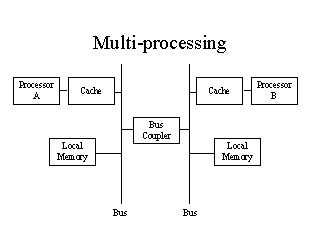

Ben awakens to find that 20 years and, more importantly, 40 semesters have passed since he last made his way to class. As his head clears he realizes that he is still sitting in an ADU lecture. Even stranger, Ben comes to recognize the both the stale jokes and thinning curly locks of the esteemed lecturer¾ Professor (now Emeritus) Pratt.
Little has changed. The canonical programming example used is still a recursive factorial routine. However, the implementation is slightly different than Ben remembers.
int factorial(int n)
{
return facthelp(1, n);
}
parallel int facthelp(int from, int to)
{
int mid;
if (from >= to)
return from;
mid = (from + to)/2;
return (facthelp(from, mid) * facthelp(mid+1, to));
}
int factorial(int n)
{
if (n > 0)
return n*fact(n-1);
else
return 1;
}
Ben soon realizes that the new factorial routine is intended for an explicitly parallel machine. The professor explains that the parallel functions are assigned to processors and executed in parallel with the function that calls them. The caller function is considered the parent processor and the parallel functions are its children. When the parent requires the result of one or more children to make further progress it automatically stalls and waits.
B. Ben remembers that the old version of the factorial function that he was taught ran in O(n) cycles. What is the execution-time complexity of the new parallel factorial function?
C. Is the factorial algorithm given suited for implementation on a SIMD processor? Explain.
D. Is the programming language extension described best suited for implementation on a SIMD or MIMD parallelism? Explain.
Each processor has N input connections and N output connections.
Each processor runs a single function called run() once per communication clock cycle. (Note: the communication clock cycle is the frequency at which messages can be sent or received. It is significantly slower than the processor clock cycle.) For each communications cycle run is called with an array of inputs, containing one value for each of the input connections. As the function runs it can send one message out along each of its N output connections. (Note: The outputs messages are collected and sent out all at once at the beginning of the next communication cycle. In other words, all communication is synchronous.)
When the parallel machine is turned on, the value for the variable CURRENT is initialized to an integer. (Note: Every processor has its own independent value of CURRENT.) On the first communication cycle the function first_cyle is run. From then on the function run is called for each subsequent cycle.
You are given the following definitions:
int CURRENT;
run(int *inputs)
{
int i;
int *sorted;
sorted = sort_ints(inputs);
CURRENT = sorted[N/2];
for (i = 0; i<N; i++) send(i, sorted[i]); }
first_cycle(int *inputs)
{
int i;
for (i = 0; i<N; i++)
send(i, CURRENT);
}
Note: the variable N is set to the number of connections. The expression N/2 yields the largest integer less than or equal to N/2.
You are told that these functions are useful for building a parallel machine that can sort integers quickly. (Note: sort_ints takes an array of ints and returns an array which is sorted smallest to largest.)
A) You are given 5 processors labeled A through E, each with 3 inputs and 3 outputs. Based on the definitions above, draw a connection diagram so that the parallel system will eventually sort the numbers initially stored in CURRENT (the smallest value should appear in A, the largest value in E).
B) Place the values 3 in A, 4 in B, 2 in C, 1 in D, and 5 in E. Show values for CURRENT and the messages on the second cycle. Show the values for CURRENT and the message on the 10th cycle.
C) In the general case where there are M processors and M integers arranged in this fashion, how many communication cycles are required to sort the numbers? Please use "theta" notation.
E) Ben Bitdiddle shows up and suggests that instead we build our machine with processors that have M+1 connections. "That would make the machine really fast!", he says. Could the programs given above be used to wire up a machine with M processors, M+1 inputs connections, and M+1 output connections? Describe how this would work. How many communication cyles are required to sort the numbers?
F) Does Ben's idea make any sense? Is this really going to save anything over a serial implementation.
G) (Extra Credit) Alyssa shows up and suggests that it might be better to build a machine with 4 input connections and 4 outputs. Can you propose a wiring scheme for such a machine? How would it work? Would it work better than the original 2 input design?
Problem on Cache Coherence:
The diagram below shows a multiprocessor system with two separate data busses
connected by a bus coupler so that they can communicate with each other.

The Bus Coupler’s job is to allow local memory on each bus to respond to
requests from the remote bus, as well as to local requests. Just like the
memory, each bus is a shared resource. At any given time only one request,
whether local or remote, can be handled because only one set of data values can
be driven on the bus at a time. The bus coupler handles the task of arbitration.
If a request from Processor A comes in to access Processor B’s memory, the
coupler first checks to see if B is using the bus. If not, it asserts its BUS
OWNER flag and takes control. If B is using the bus, the coupler must wait until
B de-asserts its BUS OWNER flag. As far as Processor A is concerned, this is all
transparent. It looks like a variable latency memory access – somewhat similar
to a disk read or write, although still faster. Obviously, the transfer process
is the same for B accessing A’s local memory. In order to speed things up,
write-back caches are installed as shown.
A.
It is found that the above configuration doesn’t function properly. Why
not?
B.
If the caches are changed to the write-through type, the system works
better than before, but the processors each still read incorrect data some of
the time. What is the problem now? What part of the original problem was solved
by using write-through caches?
C.
In order to maintain consistency, the following additional changes are
investigated:
Write procedures (in C code, pseudocode, b assembly language, English, or
COBOL) that are required for load and store operations to function properly. In
writing the procedures, think of the extra things that need to happen, in
addition to asserting control of the bus or waiting for it to become available,
when one processor has to access local or remote memory. Clearly the bus coupler
is involved in each case since it is the only means of communicating between the
two systems. Feel free to make it do some work. Also, bear in mind that for a
broadcast message to have effect, somebody has to be listening. Make any
necessary assumptions, but state them clearly in your writeup. There are many
possible solutions to this question. So, help the graders give you points by
writing clear explanations of why your procedures are correct. Which do you
think is the simpler strategy, or are they both about the same?
D. After all that work, there is still a problem with consistency. You know your procedures are correct (because you tested them in betasim). What now is going wrong?
(b) To implement page replacement, we also need the inverse of the above table --- a mapping from physical addresses to virtual addresses. How large is that table, based on the above design?
(c) For the design above using the smallest possible page size, what is the largest physical memory we can handle using 2Mbyte of storage for the paging table?
(d) A two-level page map for a system with a 32 bit address space uses pages of 1024 bytes. The first level mapping table has to always be accessible. How large is it?
(e) A paging system has space only for 4 user pages. Suppose that the user pages are accessed in the order
0, 1, 2, 3, 4, 3, 2, 1, 0, 1, 2, 3, 4, 3, 2, 1, 0, ... Using a FIFO replacement strategy, how many cache
entries are replaced during each cycle of 8 page accessed, once steady state has been reached?
Repeat for the LRU replacement strategy. Does FIFO replacement or LRU replacement work better
for this particular access pattern.
(f) Repeat part (e) for the following access pattern: 0, 1, 2, 3, 4, 0, 1, 2, 3, 4, 0, 1, 2, 3, 4, ...